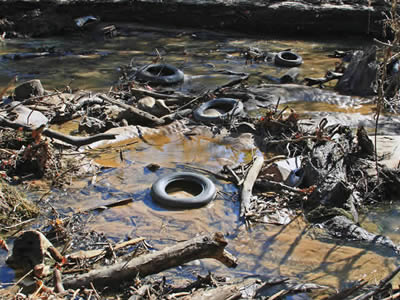
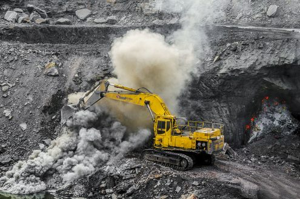
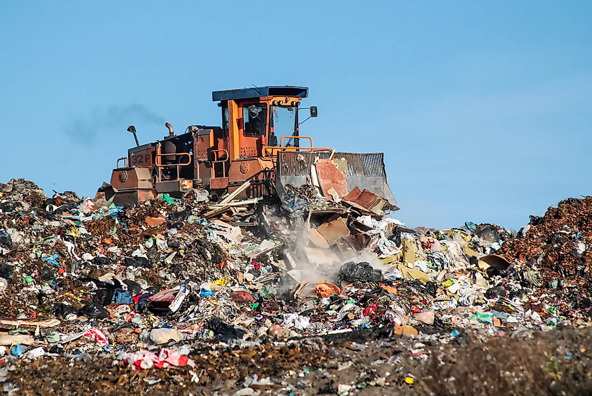

CAUSES OF LAND POLLUTION
1. Deforestation
In the Amazon rain forest in Brazil, an area the size of a football field is clear-cut by loggers every second . The removal of plant cover not only eliminates wildlife habitats and food for wildlife, but it also degrades the soil by leaving it barren and without the roots of plants to hold it in place, vulnerable to erosion.
Obviously, a rain forest gets a lot of rain, heavy rain and without a forest canopy to buffer the downpours and without ground cover to hold the soil intact, the rich soil of the forest floor is easily washed away. Along with the topsoil go the nutrients necessary to regenerate growth.
 It is estimated that eighty percent of land animals and plants live in forests. Removal of even a portion of the canopy changes the environment of the forest as the canopy blocks the harmful sunlight and keeps in heat at night. Many species cannot adapt to these severe changes in temperature and many species do not survive the destruction of their habitats.
Loggers are not the only ones responsible for the rapid deforestation of the earth. Land developers capitalizing on urban sprawl cut down forests, as does the agricultural industry in order to increase the amount of land for growing crops.
In fact, agriculture has been found to be the direct cause if 80 percent of deforestation worldwide. Much of this agricultural land is required to grow crops for animal feed, primarily cattle for the beef industry. The land is also used for cattle grazing
It is estimated that eighty percent of land animals and plants live in forests. Removal of even a portion of the canopy changes the environment of the forest as the canopy blocks the harmful sunlight and keeps in heat at night. Many species cannot adapt to these severe changes in temperature and many species do not survive the destruction of their habitats.
Loggers are not the only ones responsible for the rapid deforestation of the earth. Land developers capitalizing on urban sprawl cut down forests, as does the agricultural industry in order to increase the amount of land for growing crops.
In fact, agriculture has been found to be the direct cause if 80 percent of deforestation worldwide. Much of this agricultural land is required to grow crops for animal feed, primarily cattle for the beef industry. The land is also used for cattle grazing
2. Agriculture
The world population increase and increased demand for a food supply is causing forests and grasslands to be converted to farmland. Natural vegetation has deep roots that hold the soil in its place. Many of the replacement plants, like cotton, coffee, wheat and soybeans do not have deep roots and allow soil erosion. This means that flooding is worsened as the land no longer has the ability to absorb excess rainfall [13]. It also allows for easy runoff of fertilizers and other applied chemicals. The change in chemical composition of streams and rivers from this chemical runoff upsets the natural balance of life causing other, often foreseeable but unanticipated problems. The damage wrought from fertilizer runoff from agriculture is well-documented. It brings excess nitrogen to the water environment, creates algal blooms and consequent dead zones in the water where nothing can live. A dead zone at the mouth of the Mississippi River from fertilizer runoff primarily from corn fields along its banks, covers more than 7700 square miles (20,000 sq km) in the Gulf of Mexico during the summer months. The runoff is not only continuing, unabated, but is expected to increase as the demand for corn to feed cattle and as a biofuel increases [15]. The herbicide atrazine mentioned above has been found to cause changes in the reproductive systems in frogs, turning male frogs female..
3. Industry
Industrial activities often release toxic and material wastes onto the land or into the atmosphere where they settle onto the land. While most developed countries now regulate land dumping and emissions, the regulations balance the costs to industry and do not necessarily adequately safeguard the integrity of our biosphere or more specifically, human health. Too, many developing countries have little or no enforced regulation. For example, although cassava is the third most consumed carbohydrate in the world, the practice of dumping its toxic byproducts, that is, hazardous solid and liquid residues directly onto the land, continues in Nigeria today. A recent study of the effects on the soil of dumping cassava showed many deleterious effects to the previously arable land. The heavy metals bring about harmful changes in the microbiological, mineral and physiochemical composition of soils around the mills
4. Mining
Forty percent of the world's mines are strip mines. This is where the earth is either scraped or blasted to get to the mineral seams. The balance of mining is done underground, where pillars support the earth while work is performed underground and at the end, removed or simply left to collapse. Strip mines obviously remove the topsoil and contribute to erosion. In many developed countries, regulations now require land reclamation when the project is over.  A 2004 study showed that China's overall land reclamation rate to its strip mining operations was only about ten to twelve percent. And a problem when the reclamation is attempted is that the land has become so degraded it often cannot support newly seeded growth. Studies in US western states showed success rates of new seedlings taking purchase between ten and thirty percent . Underground mining brings a lot of waste earth and rocks to the surface where it is left. This waste often becomes toxic when exposed to air and water. Another effect on land pollution are coal fires. Underground coal fires, a significant problem in many countries can burn for centuries, emitting toxic gases, among them mercury, arsenic, fluorine and selenium, as well as emitting fly ash through its vents and fissures which then settle on the land.
5. Landfills and waste
The construction of landfills is generally overseen by a governmental agency responsible for solid waste disposal and involve compliance with regulations to safeguard the leaching of their contents into the soil. However, the clay or plastic liners often fail over time or of course, when compromised by construction breaking through them. One of the most famous environmental violations in the United States, Love Canal, though hardly an isolated incident, concerned a breached landfill containing toxic waste that caused miscarriages, nervous disorders, cancers and an unusually high number of human birth defects and deformities before being discovered. The Love Canal incident was a major impetus for passage of the Superfund Act, a law imposing strict liability, that is responsibility that cannot be bargained away from injury and damages arising from exposure to the spilled toxic contents.